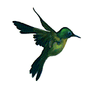

 Los colibríes permanecen entre los pájaros más pequeños que hay. La especie de tamaño más limitado es el colibrí zunzuncito o elfo de las abejas (Mellisuga helenae), que con su pico y cola mide apenas unos 5,5 cm, único de Cuba. La especie más enorme, el denominado colibrí grande (Patagona gigas), mide unos 25 centímetros. Una característica particular de los colibríes es el pico, que diverge casi continuamente de especie en especie. El colibrí pico espada (Ensifera ensifera), ejemplificando, tiene un pico casi tan extenso como el cuerpo humano, de unos 10 centímetros de longitud.
Los colibríes permanecen entre los pájaros más pequeños que hay. La especie de tamaño más limitado es el colibrí zunzuncito o elfo de las abejas (Mellisuga helenae), que con su pico y cola mide apenas unos 5,5 cm, único de Cuba.La especie más enorme, el denominado colibrí grande (Patagona gigas), mide unos 25 centímetros. Una característica particular de los colibríes es el pico, que diverge casi continuamente de especie en especie. El colibrí pico espada (Ensifera ensifera), ejemplificando, tiene un pico casi tan extenso como el cuerpo humano, de unos 10 centímetros de longitud.
Su origen está en América, donde en la antigüedad eran bastante cazados y sacrificados para ornar los sombreros de las damas de los estamentos sociales más relevantes de la era. Se cree que esta situación ha sido la culpable de que distintas especies originales se exterminaran. Colibrí: Sentido místico de esta ave en diversas civilizaciones Entre los diversos sentidos místicos asociados a este animal, el trochilidae destaca la reencarnación por su capacidad de descargar sus constantes vitales para sobrevivir, recuperando al día siguiente toda su vitalidad y energía. Como puedes revisar, se ha erigido como un signo de poder para diversos pueblos y civilizaciones de todo el mundo, por lo cual hablamos de un animal bastante codiciado entre los apasionados de estas aves tan particulares. Colibrí: Hábitat natural Las zonas tropicales y los climas templados son realmente las regiones preferidas de estas aves diminutas, así como las regiones desérticas o las de temperaturas más bajas: ello muestra que hablamos de un ave que se ajusta a cualquier situación ambiental para sobrevivir.
Los colibríes se alimentan primordialmente de néctar de flores para obtener las calorías que les permiten volar, así ayudan además en la polinización de las plantas, distribuyendo su polen de flor en flor; las proteínas las obtienen de pequeños insectos y arañas. Aunque los colibríes se alimentan primordialmente del néctar de las flores complementan su dieta con pequeños insectos y arañas que atrapan en el instante en que visitan la flor. Los colibríes y las plantas de las que se alimentan poseen una estrecha sociedad coevolutiva, principalmente famosa como sistema mutualista planta-ave. Estas asociaciones además se observan una vez que colibríes de taxas estrechamente involucrados, ejemplificando, especies del mismo género, visitan conjuntos diversos de especies de flores.
Para despertar el interés de la hembra, el macho ejecuta una danza. Luego que las hembras fueron fecundadas, construyen un diminuto nido forrado interiormente de tela de araña, algodón, liquen o musgo. A medida que incuban, son agresivamente territoriales e impiden el fisgoneo de otras avecillas, incluso de la misma especie, en la cercanía del nido. La hembra va al nido en este tiempo hasta 140 veces al día para alimentar a sus crías.
Hay una gigantesca pluralidad en casi todo el istmo centroamericano, Colombia, y Venezuela. El territorio con más pluralidad de esta especie es Ecuador que tiene 132 especies equivalente al 40 % del total mundial; no obstante, el territorio con más número de dichos es Colombia con hasta 165 especies durante su territorio.
Entre sus depredadores se encuentran el camaleón, la víbora, la mantis religiosa, la tarántula, el halcón, el correcaminos grande y en ocasiones gatos y murciélagos,etc.